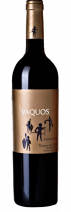
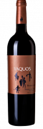

Mostrando total de 14 productos Filtros Por bodégas Más populares Mejor rating Los más nuevos Menor a mayor precio Vaquos Roble RIBERA DEL DUERO  Vaquos Crianza RIBERA DEL DUERO  Vaquos Reserva RIBERA DEL DUERO Dibon Brut Reserva CAVA Dibon Brut Rosado CAVA Dibon Semi Seco CAVA Marrugat Brut Nature Millésime CAVA Sparkling Gaudiana Blanco PENEDÉS Sparkling Gaudiana Rosado PENEDÉS Clos de Torribas Blanco PENEDÉS Clos de Torribas Rosado PENEDÉS Chateldon Reserva PENEDÉS Chateldon Gran Reserva PENEDÉS Vaquos Verdejo RUEDA Clos del Mas PRIORATO +7 PRIORATO Balcons PRIORATO